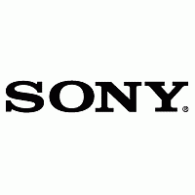

Gaming
Gaming is a major industry that was made possible back in the 1950's but never became popular until the 1970's
The Major Gaming Companies
These companies are currently the most popular in the gaming industry which I have provided some details about their history in the gaming industry
| Company | Description |
|---|---|
| Microsoft |
Microsoft was introduced into the gaming industry in 2001 when they developed the first Xbox. Since the creation of the original Xbox they have created two other systems with the latest being the Xbox One. |
| Sony | Sony was introducd into the gaming industry in 1994 when they released the first PlayStation. Sony also had released a portable gaming device known as the PlayStation Portable (PSP) in 2004. Since the release of the original PlayStation there have been three newer generations of the console with the latest release being the PlayStation 4 |
| Nintendo |
Nintendo is the oldest company in this list for gaming with their first release being the Nintendo Entertainment System in 1985, and have been making new consoles ever since. their latest |